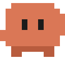

Nudge is installed. One more step.
The extension draws Nudge in your browser. A small helper on your computer tells it when Claude Code needs you. Set that up once and you're done.
Checking for the helper…-
1
Run this once in your terminal
npx nudge-mascot setupIt adds the Claude Code hooks to
~/.claude/settings.json(with a backup) and starts a tiny relay on 127.0.0.1 that keeps running at login. Needs Node 18 or newer. This page updates on its own when the relay is running. -
2
Restart Claude Code
Quit any running Claude Code session and start it again so it picks up the new hooks.
-
3
Send a test nudge
npx nudge-mascot testThen switch to any website tab. Nudge waves in the corner. Settings live in the toolbar popup.